エレガの型番について
�@ヘッドフォンについて
解説ページに記述したようにダイナミック型は先頭に「DR」、動電全面駆動型は「FR」、コンデンサー型は「CR」となっている。さらに「電磁型」は「TR」または「E」を名乗り、ブームマイク付きのヘッドセットは、ヘッドフォン部がダイナミック型なら「MDR」、電磁型なら「MTR」を使っていたようだ。
型番末尾に「C」がつくモデルが多いが、ステレオ仕様のモデルの意味で、一部にはモノラル仕様の「A」や医療用など検聴用仕様の「B」がつくバリエーションを持つモデルがある（例 DR-631)。また２ウェイ型の通常のものは型番の末尾が「CH」、ボリュウム・トーンコトロール付きが「HRT」、さらに4chステレオ対応機は「Q」がついた。
（DR-631のバリエーション）
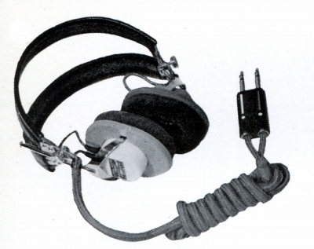
（1960年代初頭のDR-631C)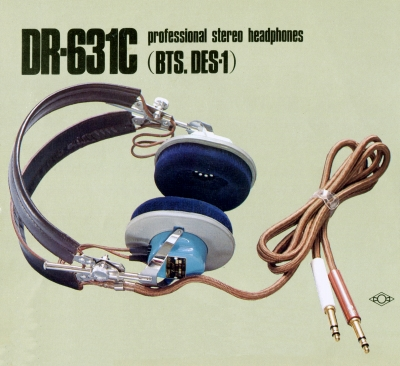
（1970年代半ばのDR-631C)
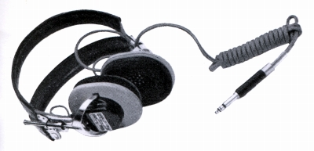
（モノラル仕様のDR-631A)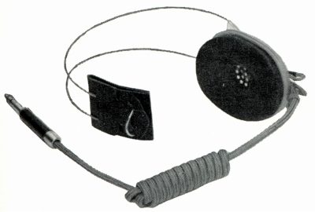
(631Aのシングルフォン仕様 DR-631AS ノーマルのAの490ｇに対し220ｇ）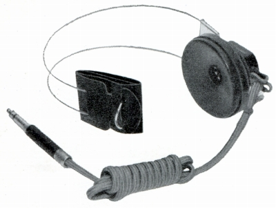
（聴力測定機用のシングルフォンDR-631BS DR-631AS に比べ400ｇと、重い）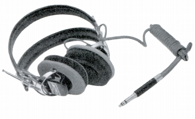
（DR-531にもモノラル仕様があった。DR-531A)（電磁型のヘッドフォン）
電磁型は今日のダイナミック型のような永久磁石を用いるのではなく、電磁石を用いるタイプである。カタログ上は1960年代まで残っていたようだ。用途は、当然、オーディオ用ではなく、無線等用だったようだ。周波数帯域は200-4,000Hzであった。
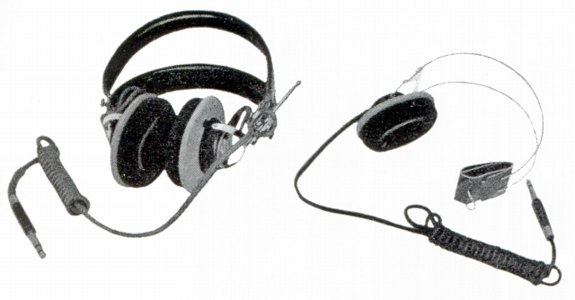
(TR-31A及びそのシングルタイプ）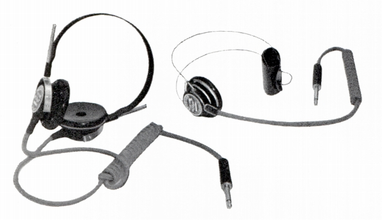
(TR-31B及びそのシングルタイプ、軽量型）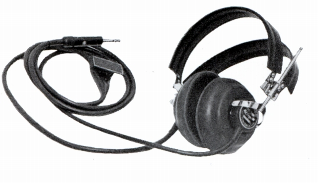
(TR-40、ある程度の防水機能を有する野外用）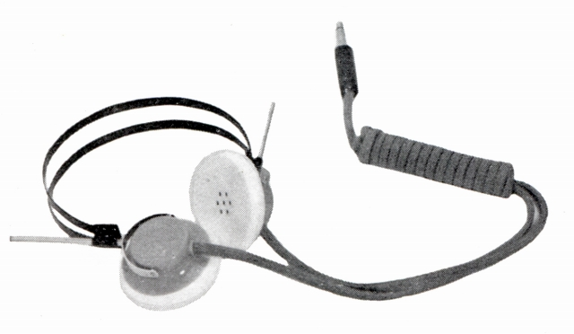
(E-58 録音用の軽量タイプ）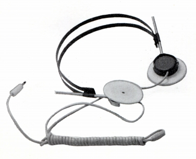
(E-61 最軽量モデル）（ヘッドセット）
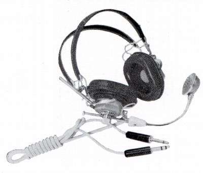
(MDR-60�V 1960年代の製品。ヘッドホンのスペックはDR-60と同じだが、関連不明）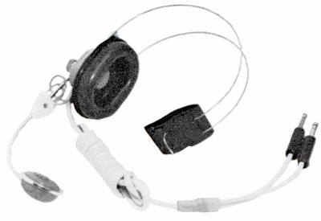
(MDR-60S MDR-60�Vのシングルタイプ。540g→280gと軽量）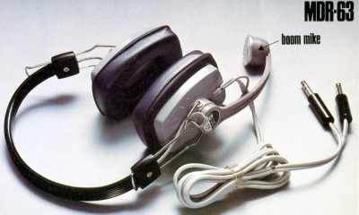
(MDR-63 1970年代半ばの製品）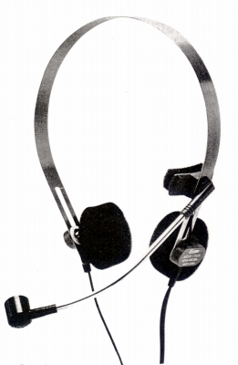
(MDR-70A 1980年代初頭の製品。各所が近代化している）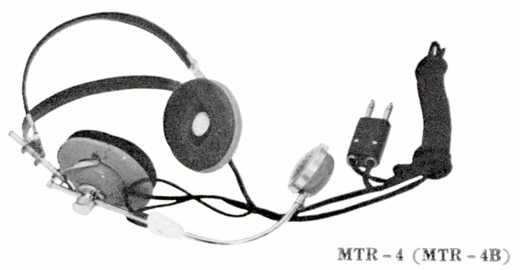
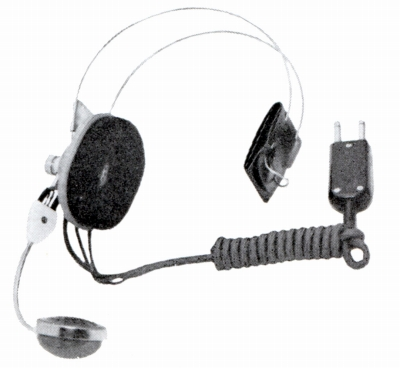
(電磁型ベースのMTR-4とそのシングルタイプMTR-4S)
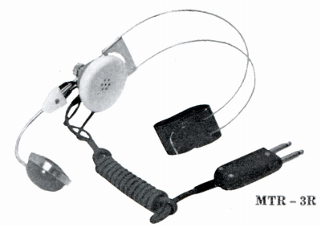
(MTR-3R 不思議なことに、ヘッドフォン部スペックは、単体ヘッドフォンよりいい）
�Aヘッドフォン周辺製品について
聴診器型イヤホン(STETHOSCOPIC
PHONES)は「SP」の型番をもっていたようだ。ステレオタイプもあったようだが、スペック的には周波数帯域100-4,000Hzと音楽観賞用ではない。同様の製品は、同じく老舗のASHIDAVOXも作っていた。
またウォークマンに代表されるヘッドフォン・ステレオの台頭で姿を消した機器に、「ピロー・スピーカー」がある。病院などでラジオの音を楽しむ為、枕に仕込んだ小型スピーカーである。モノラル・ジャックで接続する。エレガでは「PR」の型番だったようだ。スペック的には周波数帯域100-4,000Hz。
今日「イヤホン」といえば、1980年代に登場したインナー・イヤー型や、カナル型の小型ステレオ・フォンとなるが、1970年代まで「イヤホン」といえば、モノラルで簡易的なものだった。エレガでは電磁型にも使われた「E」の型番だった。周波数帯域は上位モデルで100-5,000Hz、下位のモデルでは200-3,500Hz程度だった。興味深いのは、すでに耳掛け型があったことである。
（聴診器型イヤホン(STETHOSCOPIC PHONES)）
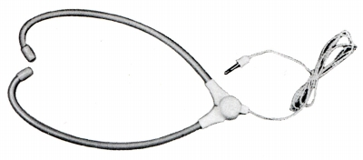
（モノラル仕様のST-4)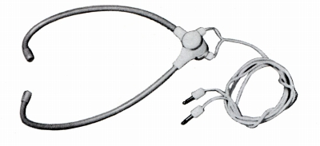
（ステレオ仕様のST-6)(ピロー・スピーカー)
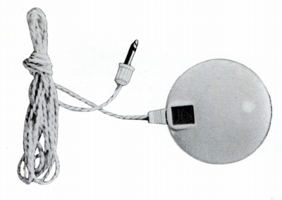
(PR-1 なお、こうした製品は現在でも、完全に消滅した訳ではない。「例」）(イヤホン)
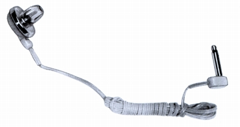
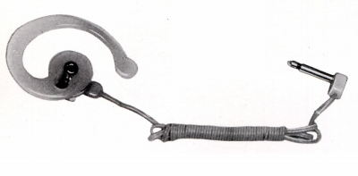
（左E-15A 右E-15C)
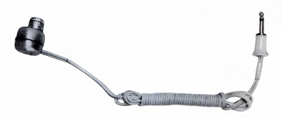
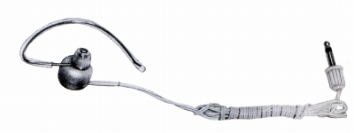
（左E-22-�UA 右E-22-�UB)
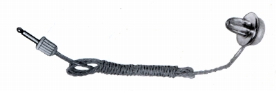
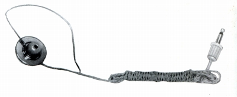
（左E-23A 右E-23B)
エレガのインデックスへ